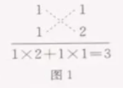

第十四章 整式的乘法与因式分解
注: 如非特殊说明, 以下图片都来自电子课本网
14.1 整式的乘法
14.1.1 同底数幂的乘法
$a^m . a^n = a^{m + n}$
$a^m ÷ a^n = a^{m - n}$
14.1.2 幂的乘方
$(a^m)^n = a^{mn}$
14.1.3 积的乘方
$(ab)^n = a^n b^n$
14.1.4 整式的乘法
$(x + p)(x + q) = x^2 + (p + q)x + pq$
$(ax + p)(bx + q) = abx^2 + (bp + aq)x + pq$
14.2 乘法公式
14.2.1 平方差公式
两个数的和与这两个数的差的积, 等于这两个数的平方差.
这个公式叫做(乘法的)平方差公式(for mula for the difference of squares).
$(a + b)(a - b) = a^2 - b^2$
⇒ $(n + 1)(n - 1) = n^2 - 1$
14.2.2 完全平方公式
$(a + b)^2 = a^2 + 2ab + b^2$
$(a - b)^2 = a^2 - 2ab + b^2$ ⇒ $a^2 + b^2 > 2ab$ (a ≠ b)
两个数的和(或差)的平方, 等于它们的平方和, 加上(或减去)它们的积的2倍.
这两个公式叫做(乘法的)完全平方公式(formula for the square of the sum).
$(a + b + c)^2 = a^2 + b^2 + c^2 + 2ab + 2bc + 2ac$
* 立方和/差公式(课本没找到)
完全立方公式
$(a + b)^3 = a^3 + 3a^2b + 3ab^2 + b^3$
$(a - b)^3 = a^3 - 3a^2b + 3ab^2 - b^3$
★背 立方和/差公式
$a^3 + b^3 = (a + b)(a^2 - ab + b^2)$
$a^3 - b^3 = (a - b)(a^2 + ab + b^2)$
立方和累加
$1^3 + 2^3 + ... + n^3 = [{n(n+1) \over 2}]^2 = (1 + 2 + ... + n)^2$
三项立方和公式
$a^3 + b^3 + c^3 - 3*abc = (a + b + c)(a^2 + b^2 + c^2 -ab -bc -ac)$
阅读与思考 杨辉三角
14.3 因式分解
把一个多项式化成了几个整式的积的形式, 像这样的式子变形叫做这个多项式的因式分解(factorization), 也叫做把这个多项式分解因式.
14.3.1 提公因式法
一般地, 如果多项式的各项有公因式, 可以把这个公因式提取出来,
将多项式写成公因式与另一个因式的乘积的形式, 这种分解因式的方法叫做提公因式法.
例1: 把 $8a^3b^2 + 12ab^3c$ 分解因式
解:
= $4ab^2(2a^2 + 3bc)$
例2: 把 $2a(b + c) - 3(b + c)$ 分解因式
解:
= $(2a - 3)(b + c)$
14.3.2 公式法
$a^2 - b^2 = (a + b)(a - b)$
$a^2 + 2ab + b^2 = (a + b)^2$
$a^2 - 2ab + b^2 = (a - b)^2$
可以看出, 如果把乘法公式的等号两边互换位置, 就可以得到用于分解因式的公式,
用来把某些具有特殊形式的多项式分解因式, 这种分解因式的方法叫做公式法.
阅读与思考:
$x^2 + (p + q)x + pq = (x + p)(x + q)$
十字相乘法(
百度百科资料):
用十字相乘的形式形象地表示: 先分解二次项系数, 分别写在十字交叉线的左上角和左下角;
再分解常数项, 分别写在十字交叉线的右上角和右下角; 然后交叉相乘, 求代数和, 使其等于一次项系数(图1).
$x^2 + 3x + 2$

快速求解十字相乘法心得(设下方函数有解, a≠0):
1.将 $ax^2 + bx + c$ 中的a提取出来, 确保二次项系数=1, 得: $a(x^2 + {b \over a}x + {c \over a})$.
2.然后根据公式快速求出 $x^2 + {b \over a}x + {c \over a}$ 的解 $C_1, \ C_2$.
3.最后结果: $ax^2 + bx + c = a(x - C_1)(x - C_2)$
数学活动
小结
复习题14